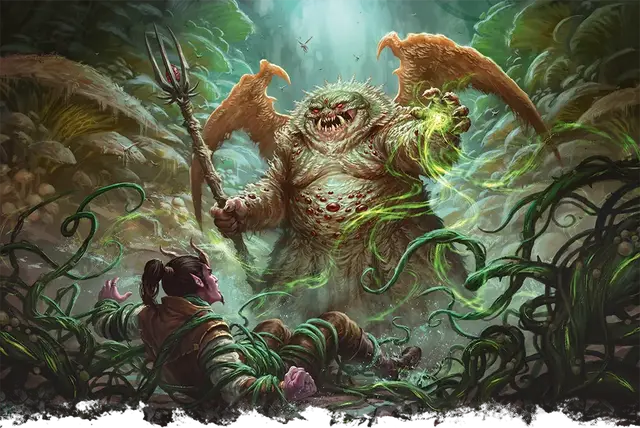

Демоданд шатор
Shator Demodand
Большое Исчадие, нейтрально-злое

Класс Доспеха 19 (природный доспех)
Хиты 195 (23к10 + 69)
Скорость 30 футов, летая 60 футов
| мод | спас | ||
|---|---|---|---|
| СИЛ | 24 | +7 | +7 |
| ЛОВ | 15 | +2 | +7 |
| ТЕЛ | 17 | +3 | +3 |
| мод | спас | ||
|---|---|---|---|
| ИНТ | 21 | +5 | +5 |
| МДР | 16 | +3 | +9 |
| ХАР | 20 | +5 | +5 |
Навыки Восприятие +13, Скрытность +7
Сопротивление урону огонь, холод
Иммунитет к урону кислота, яд
Иммунитет к состояниям испуг, опутанность, отравление, очарование, паралич
Чувства истинное зрение 120 футов, пассивное Восприятие 23
Языки Общий, Бездны, Инфернальный, Язык Демодандов
Опасность 16 (15000 опыта)
Бонус мастерства +5
Особенности
Неостановимое передвижение. Шатор игнорирует труднопроходимую местность, и магические эффекты не могут снизить его скорость. Он может потратить 5 футов своего передвижения, чтобы автоматически окончить на себе захват.
Сопротивление магии. Шатор совершает с преимуществом спасброски от заклинаний и прочих магических эффектов.
Тюремщик (1/день). Шатор может накладывать заклинание заточение [imprisonment], не нуждаясь в материальных компонентах, используя Интеллект в качестве базовой характеристики (только эффект Сковывание; Сл спасброска 18).
Ритуал разжижения. Шатор может совершить 1-минутный ритуал, превращающий, по своему выбору, всех согласных фарасту и келубаров, находящихся в пределах 60 футов в живую жидкость. Каждый демоданд разжижается в количество жидкости достаточного, чтобы заполнить колбу. Разжижение демоданда длится до тех пор, пока шатор не использует действие, чтобы окончить его, или существо не откроет контейнер с жидкостью. Разжиженный таким образом, демоданд парализован, несмотря на любой иммунитет к этому состоянию, и обладает иммунитетом ко всем типам урона, а любое проклятие, воздействующее на него, приостанавливается.
Анестезирующие выделения. Существо, касающееся шатора или попадающее по нему рукопашной атакой, находясь в пределах 5 футов от него, должно преуспеть в спасброске Ловкости Сл 17, иначе будет с помехой совершать броски атаки, а его скорость уменьшается вдвое до его конца следующего хода.
Действия
Мультиатака. Шатор совершает одну атаку Укусом и две атаки Ослабляющим трезубцем.
Укус. . Рукопашная атака оружием: +12 к попаданию, досягаемость 5 футов, одна цель. Попадание: 17 (3к6 + 7) колющего урона плюс 26 (4к12) урона кислотой. Если целью является существо, оно должно преуспеть в спасброске Телосложения Сл 16, иначе станет парализованным до начала следующего хода шатора.
Ослабляющий трезубец. . Рукопашная атака оружием: +12 к попаданию, досягаемость 10 футов, одна цель. Попадание: 18 (2к10 + 7) урона некротической энергией.
Подавляющая струя (перезарядка 5-6). Шатор выпускает струю слизи линией длиной 100 футов и шириной 5 футов. Каждое существо в этой области должно совершить спасбросок Ловкости Сл 16. При провале существо получает 40 (9к8) урона кислотой и становится парализованным на 1 минуту. Существо может повторять спасбросок в конце каждого своего хода, оканчивая на себе действие эффекта в случае успеха. При успехе существо получает только половину этого урона.
Использование заклинаний. Шатор накладывает одно из следующих заклинаний, не нуждаясь в материальных компонентах, используя Харизму в качестве базовой характеристики (Сл спасброска от заклинания 18, +10 к попаданию атаками заклинаниями):
• Неограниченно: невидимость [invisibility] (только на себя), внушение [suggestion];
• 1/день каждое: рассеивание магии [dispel magic], наблюдение [scrying] (действием), уход в иной мир [plane shift] (только на Карцери).
Вызов демоданда (1/день). Шатор имеет 50-процентный шанс призвать 1к4 демодандов фарасту [farastu Demodand], 1к2 демодандов келубар [kelubar Demodand] или 1 демоданда шатора [shator Demodand]. Призванный демоданд появляется в незанятом пространстве в пределах 60 футов от призывателя, действует как его союзник, и не может призывать других демодандов. Он присутствует в течение 1 минуты, пока он, либо призыватель, не умрут, или пока призыватель не отпустит его действием.
Описание
Шаторы, известные как косматые демоданды, доминируют в обществе демодандов, безжалостно командуя своими меньшими сородичами. Это неповоротливые существа, покрыты грибковыми наростами. Шаторы - самоназванные надзиратели Карцери, и они ведут тщательный учет своих подчиненных и заключенных, на которых они претендуют. В тех редких случаях, когда шаторы оказываются на Материальном плане, они манипулируют смертными лидерами и философами, используя их в качестве рупоров для распространения отравленных слов и заманивания душ в ожидающие в Карцери цепи.
Демоданды
Демоданды, также называемые герелетами, - исчадия ада из Забытых Преисподних Карцери. Давным-давно брошенные в тюремный план за забытые прегрешения, эти жестокие, озлобленные существа назначили себя тюремщиками этого плана. Демоданды яростно защищают несколько известных порталов, ведущих из Карцери, и безжалостно истязают других существ, оказавшихся здесь в ловушке.
Демоданды, которым удается покинуть Карцери, знают, что они обречены вернуться; демоданд, который умирает за пределами Карцери, в мучениях возрождается там, в течении 2к20 дней. Даже те, кто выживает на иных планах, в конце концов оказываются затянутыми обратно, удерживаемые неким планарным поводком.